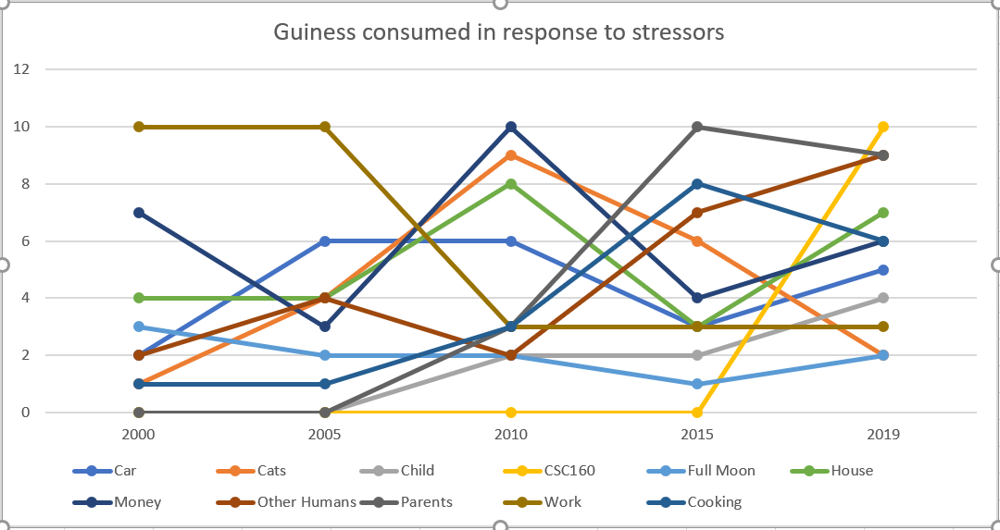

Representing Changes in Data Accurately
What is the fundamental difference between the data discussed in chapter 7 and the data discussed in chapter 8?
The discussion on data in chapter seven of Cairo's book, The Truthful Art, is on how to represent the distribution of data points.
The discussion on data in chapter eight of the book surrounds time based changes in that data.
For example, the data expressed in my Stressors vs Guiness chart shows beers consumed as related to various stressors at a single point in time.
Examining the stress elements and associated beers consumed and how it changes over time tells a story about change.

2) What are the pro's and cons of 3 visualizations techniques discussed in chapter 8?
Features of a Time Series
A time series is a visualization that shows change over equally spaced time intervals on the x-axis and the variables on the y-axis (Cairo, p. 201).
- Trend - how do the variables change in time?
- Seasonality - are there consistent and periodic fluctuations?
- Noise - are there random changes?
Features of an Index
Indexing a time based chart will show the percentage of change over time. It is tied to a single index value or the average
of several values (Cairo, p. 214).
Features of Ratio Charts
A ratio time series allows comparison of the "rate of change of each time period in comparison to the previous one" (p. 214).
Features of a Logarithmic Scale
When looking at data that increases exponentially, time series charts may not visually represent the series well.
Using a log base, the data points are set by their magnitude in relation to the previous point.